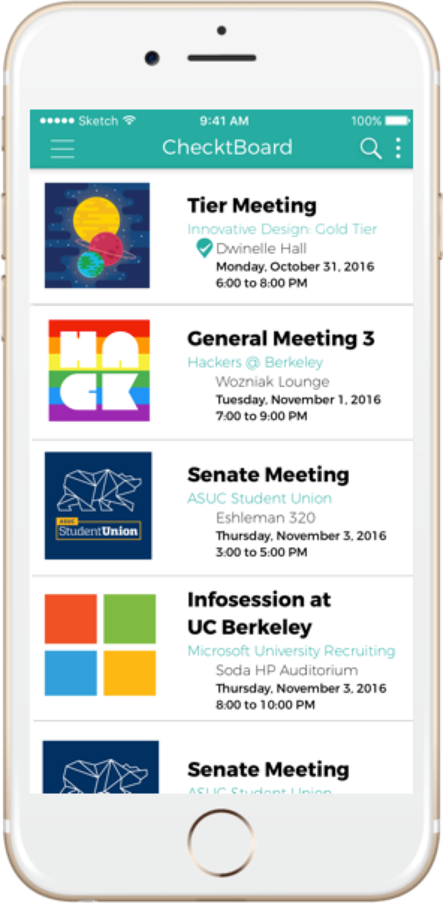
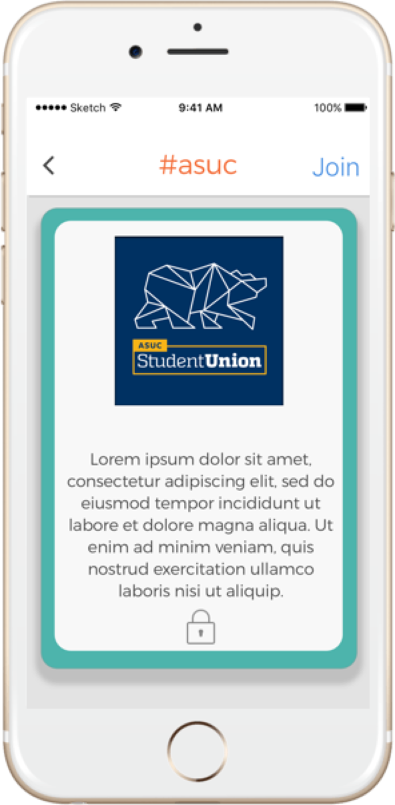
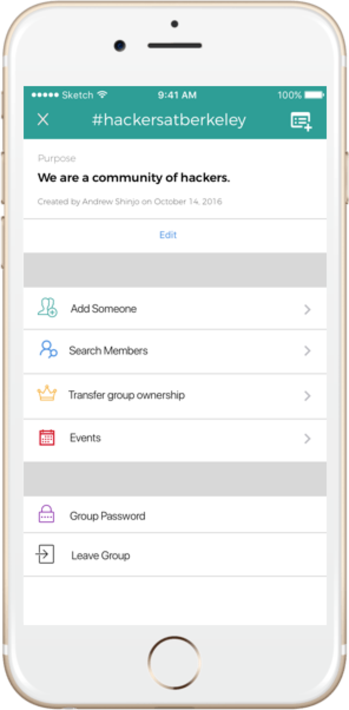
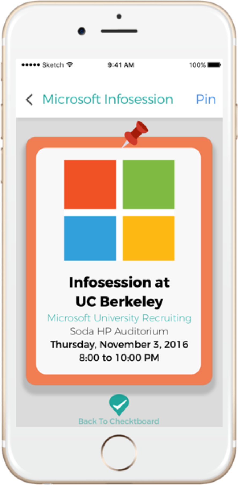
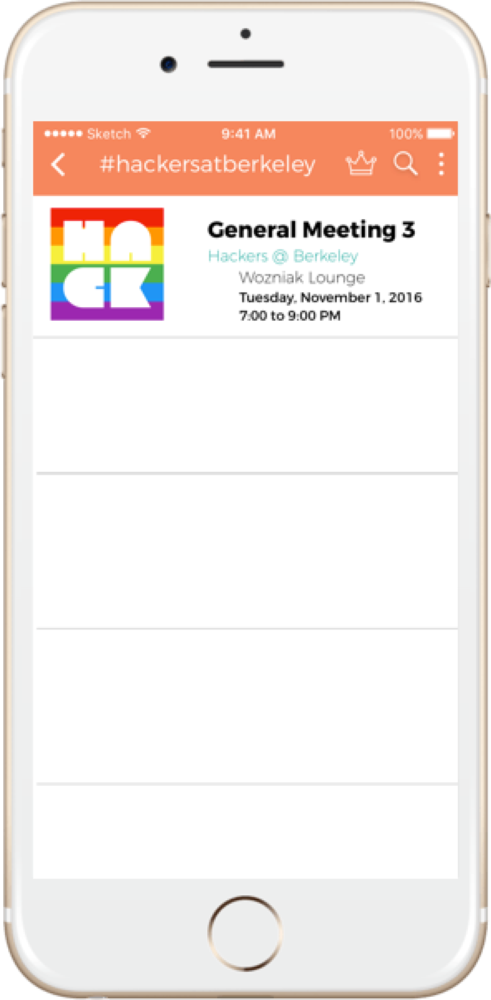
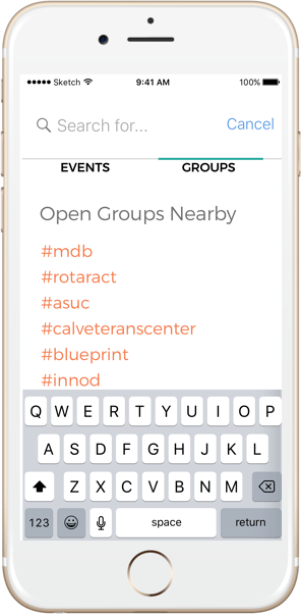

Checkt
Checkt is an iOS mobile application focused on making the check in process easier for both event hosts and event participants. Checkt uses location based GPS services to automatically sign users into an event once they have reached the set destination of the event during the specific date and time. Event hosts receive all information regarding participants who have checked in and are able to send out announcements and details to participants.
my roles included: iOS mobile development, iOS mobile UI design, UX research, usability testing
Goals
We needed to consider the whole flow to the app from the login process to the main app functionality. There was no previous design of the app since the concept started from simply an idea.Log In
Research
Designing the log in screen is definitely one of the trickiest parts to design in my opinion, just because it is one of the core parts of the app that users can easily find tedious. Having a great log in flow will also lead to less users falling off during the sign up process and lead to a higher retention in users, which is a very important quality when trying to obtain users initially.
First, I looked at the sign in flows of many other applications to observe the pros and cons of each one and determine what Checkt needs. Checkt itself has a lot of core detail and feature specific needs in the main chunk of the app. The con was that Checkt does need some kind of log in process before the user can access the app, unlike a shopping app, where users can immediately go in and check out products before even registering. This pro is that Checkt does not require a heavy amount of data initially to be input. Checkt only requires name, email, and password which is as minimum as it can get for a basic sign in feature. Therefore, I started to look at apps with a more minimalistic design approach in their log in flow such as Robinhood and Slack which make it very straightforward for new users.
Hi-Fidelity Design
- I wanted to make it clear immediately to let users know how to sign up. Therefore, having the 'Create Account' button in the bright orange clearly distinguishes from the standard option of logging in.
- Users should also feel more comfortable when registering so we give them the option of choosing Facebook, so they do not need to remember any more user names and passwords - but this does come with a negative side. Not all users want to connect their social media accounts due to privacy concerns.
- To make the flow easier, I presented the keyboard immediately where there is a text field when users begin to fill out their information. This requires one tap less = less effort for the user.
Core App Components
Research
Now, I began to think about how to approach organizing the design of the app, knowing that there is an abundant of information that needs to be presented. I need to be able to display both information for a group AND a solo event. Some users will be in organizations that will have multiple events, while some events are hosted one-time only or for the public. These are both two different concepts but have basically the same functionality wise in the app. Therefore, I designed the usage of a right swap nav bar menu (not pictured below), but think of the nav bar menu that is shown on the left when the user slides right. (Venmo & Slack are the first two apps that have this that come off the top of my head)
There is a lot of similar information that needs to be displayed in one event, so I thought a TableView display would be the best appropriate approach. A TableView is marketed as a table that presents data in a single column list of rows. This would be handy since every event needed to display the title, group hosting, event location, and time & date. Lastly, I wanted to keep in mind that there will be a lot of data that needs to be displayed, so I need to properly make certain text or buttons stand out so that the user does not need to use as much cognition effort to realize what item they should be focusing their attention on next.
    
- I have solo events displayed in turquoise and group events in orange, highlighting the accent colors presented in the app as well as distinguishing between the groups and solo events.
- I also wanted to use a TableView because it is important to make sure controls are in a reachable space for users simply using their thumb.
- The card view is one of my favorite highlights of this design. A card view is a great example of skeumorphism, by having that same metaphor of real world tangible card (business cards, baseball cards). It provides a great way to communicate information in a memorable display. This fit Checkt's goal of trying to represent an individual item (event or group) on a card so that users are able to easily see the card image, name, and quick summary of the event.
- Lastly, I wanted to keep it trendy by holding on to the #hashtag that follows each group name. I felt that this fit Checkt's memorable design and catchy home screen, so called the 'Checktboard'.
..And now what?
The Checkt design was a concept that wanted to be turned into reality. The designs all presented above were first prototype designs. Then, the rest of the team and I began the development process for the app but due to much of the team's lack of interest after a while, we were only able to flush out a MVP of the product. Therefore, I did not continue to iterate and grow my designs (... but I do see this as a future design challenge and task for me to do for fun and practice :D).
Ultimately, I think it was a good run going through this design process and I was able to learn a lot and turn my idea into a digital reality. I realized afterward that there are lots of improvements that could be made to the design such as better distinguishing between the groups and events features. I also would have loved to spend more time during the research phase to sit down and be able to do more personalized user experience research by speaking with individuals who are frequently going to events and needing to check in. I had a great time and awesome learning experience. This shows me that there is never a time where one stops growing, and I can always continue to strive for better and push for better than the best.